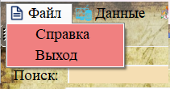
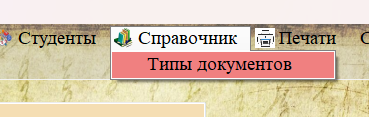
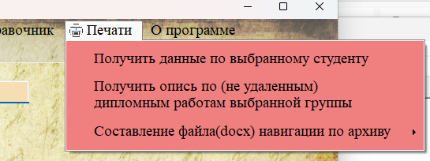
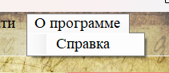
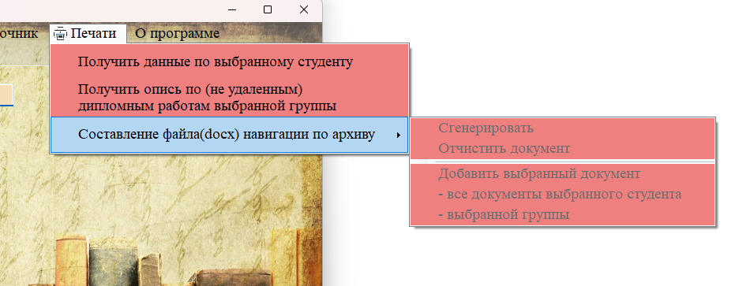

Навигация между разделами программы осуществляется через главное меню, расположенное в верхней части главного окна. Меню имеет иерархическую структуру: при наведении на пункт раскрывается подменю.

Рис. 1. Главное меню программы — основной инструмент навигации
Пункт «Файл»

Содержит пункт «Выход» — завершение работы с приложением. При выборе этого пункта программа закрывается.
Пункт «Данные»

Содержит три подраздела для работы с основными сущностями архива:
— Пользователи — доступен только для администратора. Позволяет управлять учётными записями сотрудников.
— Группы — просмотр и редактирование списка учебных групп.
— Коробки — учёт мест хранения документов (стеллажи, полки, коробки).
Пункт «Студенты»

Содержит пять подразделов, связанных с учётом студентов и их документов:
— Студенты — список всех студентов.
— Персональные файлы — личные дела студентов (срок хранения 75 лет).
— Удаленные перс. файлы — личные дела, подлежащие уничтожению.
— Документы работ — курсовые, дипломные работы, отчёты по практике (срок хранения 5 лет).
— Удаленные док. работ — документы с истёкшим сроком хранения.
Пункт «Справочник»

Содержит пункт «Типы документов» — справочник, используемый для классификации документов (например: «Курсовая работа», «Дипломная работа», «Отчёт по практике», «Экзамен», «Зачёт»).
Пункт «Печати»

Содержит три пункта для формирования отчётов:
— Получить данные по выбранному студенту — печать личного дела.
— Получить опись по (не удаленным) дипломным работам выбранной группы — формирование списка дипломов.
— Составление файла навигации по архиву — создание документа со ссылками на выбранные элементы.
Пункт «О программе»

Содержит пункт «Справка» — открывает данную справочную систему (CHM-файл).
Как работает переключение между разделами

Рис. 2. При выборе пункта меню содержимое таблицы меняется
При выборе любого пункта меню происходит следующее:
1. Текущая таблица очищается.
2. Программа формирует SQL-запрос к соответствующей таблице базы данных.
3. Данные загружаются в таблицу на экране.
4. Заголовки столбцов получают понятные русские названия.
5. В статусной строке отображается количество загруженных записей.
6. Становится доступным контекстное меню «Фильтр».
Совет: Для быстрой навигации используйте сочетания клавиш (при их наличии). Номер активного раздела отображается в левой части строки состояния.